<!doctype html>
<html lang="pl">
<head>
<meta charset="utf-8">
<meta name="viewport" content="width=device-width, initial-scale=1">
<title>Sylwia Mirowska - malarstwo i projektowanie wnętrz, Kraków</title>
<meta name="description" content="Sylwia Mirowska - obrazy inspirowane przyrodą i projekty wnętrz. Malarka i projektantka wnętrz z Krakowa.">
<meta name="robots" content="noindex, nofollow" data-podglad>
<link rel="canonical" href="https://wylinka-podglad.pl/artmirowska-koncepcja/">
<meta name="theme-color" content="#ffffff">
<link rel="icon" href="data:image/svg+xml,%3Csvg%20xmlns%3D%22http%3A%2F%2Fwww.w3.org%2F2000%2Fsvg%22%20viewBox%3D%22-4%20-30%20122%20122%22%3E%3Cg%20id%3D%22hk%22%3E%3Crect%20x%3D%2215.80%22%20y%3D%22-0.90%22%20width%3D%224.4%22%20height%3D%229.8%22%20fill%3D%22%2300A0E3%22%20transform%3D%22rotate%28135.1%2018.00%204.00%29%22%2F%3E%3Crect%20x%3D%2211.30%22%20y%3D%222.98%22%20width%3D%224.4%22%20height%3D%229.8%22%20fill%3D%22%23A2D9F7%22%20transform%3D%22rotate%28137.2%2013.50%207.88%29%22%2F%3E%3Crect%20x%3D%227.54%22%20y%3D%227.58%22%20width%3D%224.4%22%20height%3D%229.8%22%20fill%3D%22%23008DD2%22%20transform%3D%22rotate%28117.8%209.74%2012.48%29%22%2F%3E%3Crect%20x%3D%225.42%22%20y%3D%2213.16%22%20width%3D%224.4%22%20height%3D%229.8%22%20fill%3D%22%23F9B101%22%20transform%3D%22rotate%28104.3%207.62%2018.06%29%22%2F%3E%3Crect%20x%3D%224.60%22%20y%3D%2219.04%22%20width%3D%224.4%22%20height%3D%229.8%22%20fill%3D%22%23F9AF02%22%20transform%3D%22rotate%2891.2%206.80%2023.94%29%22%2F%3E%3Crect%20x%3D%224.97%22%20y%3D%2224.99%22%20width%3D%224.4%22%20height%3D%229.8%22%20fill%3D%22%23F8AD03%22%20transform%3D%22rotate%2881.8%207.17%2029.89%29%22%2F%3E%3Crect%20x%3D%226.34%22%20y%3D%2230.77%22%20width%3D%224.4%22%20height%3D%229.8%22%20fill%3D%22%23F8AB05%22%20transform%3D%22rotate%2870.7%208.54%2035.67%29%22%2F%3E%3Crect%20x%3D%229.02%22%20y%3D%2236.08%22%20width%3D%224.4%22%20height%3D%229.8%22%20fill%3D%22%23F7A906%22%20transform%3D%22rotate%2856.2%2011.22%2040.98%29%22%2F%3E%3Crect%20x%3D%2212.81%22%20y%3D%2240.68%22%20width%3D%224.4%22%20height%3D%229.8%22%20fill%3D%22%23F7A707%22%20transform%3D%22rotate%2845.1%2015.01%2045.58%29%22%2F%3E%3Crect%20x%3D%2217.38%22%20y%3D%2244.51%22%20width%3D%224.4%22%20height%3D%229.8%22%20fill%3D%22%23F7A508%22%20transform%3D%22rotate%2834.9%2019.58%2049.41%29%22%2F%3E%3Crect%20x%3D%2222.51%22%20y%3D%2247.56%22%20width%3D%224.4%22%20height%3D%229.8%22%20fill%3D%22%23F6A309%22%20transform%3D%22rotate%2826.5%2024.71%2052.46%29%22%2F%3E%3Crect%20x%3D%2228.02%22%20y%3D%2249.80%22%20width%3D%224.4%22%20height%3D%229.8%22%20fill%3D%22%23F6A10B%22%20transform%3D%22rotate%2817.2%2030.22%2054.70%29%22%2F%3E%3Crect%20x%3D%2233.89%22%20y%3D%2250.89%22%20width%3D%224.4%22%20height%3D%229.8%22%20fill%3D%22%23F59F0C%22%20transform%3D%22rotate%283.2%2036.09%2055.79%29%22%2F%3E%3Crect%20x%3D%2239.85%22%20y%3D%2250.61%22%20width%3D%224.4%22%20height%3D%229.8%22%20fill%3D%22%23F59D0D%22%20transform%3D%22rotate%28-8.1%2042.05%2055.51%29%22%2F%3E%3Crect%20x%3D%2245.64%22%20y%3D%2249.31%22%20width%3D%224.4%22%20height%3D%229.8%22%20fill%3D%22%23F59B0E%22%20transform%3D%22rotate%28-17.1%2047.84%2054.21%29%22%2F%3E%3Crect%20x%3D%2251.14%22%20y%3D%2247.05%22%20width%3D%224.4%22%20height%3D%229.8%22%20fill%3D%22%23F4990F%22%20transform%3D%22rotate%28-27.6%2053.34%2051.95%29%22%2F%3E%3Crect%20x%3D%2256.17%22%20y%3D%2243.84%22%20width%3D%224.4%22%20height%3D%229.8%22%20fill%3D%22%23F49711%22%20transform%3D%22rotate%28-37.4%2058.37%2048.74%29%22%2F%3E%3Crect%20x%3D%2260.47%22%20y%3D%2239.74%22%20width%3D%224.4%22%20height%3D%229.8%22%20fill%3D%22%23F39512%22%20transform%3D%22rotate%28-51.6%2062.67%2044.64%29%22%2F%3E%3Crect%20x%3D%2263.79%22%20y%3D%2234.78%22%20width%3D%224.4%22%20height%3D%229.8%22%20fill%3D%22%23F39313%22%20transform%3D%22rotate%28-59.3%2065.99%2039.68%29%22%2F%3E%3Crect%20x%3D%2266.79%22%20y%3D%2229.62%22%20width%3D%224.4%22%20height%3D%229.8%22%20fill%3D%22%23EF7F1A%22%20transform%3D%22rotate%28-56.4%2068.99%2034.52%29%22%2F%3E%3C%2Fg%3E%3Cuse%20xmlns%3Axlink%3D%22http%3A%2F%2Fwww.w3.org%2F1999%2Fxlink%22%20href%3D%22%23hk%22%20transform%3D%22rotate%28180%2057%2030.5%29%22%2F%3E%3C%2Fsvg%3E">
<link rel="preload" href="fonts/lora-rdzen.woff2" as="font" type="font/woff2" crossorigin>
<link rel="preload" href="fonts/jost-rdzen.woff2" as="font" type="font/woff2" crossorigin>
<link rel="preload" as="image" type="image/webp" imagesrcset="foto/h-dzikosc-720.webp 720w, foto/h-dzikosc-1100.webp 1100w, foto/h-dzikosc-1417.webp 1417w" imagesizes="(max-width:960px) 92vw, 60vw" fetchpriority="high">
<link rel="stylesheet" href="style.css">
</head>
<body>
<a class="skip" href="#tresc">Przejdź do treści</a>
<svg width="0" height="0" style="position:absolute" aria-hidden="true"><defs><symbol id="znak" viewBox="0 0 114 61"><g id="hk"><rect x="15.80" y="-0.90" width="4.4" height="9.8" fill="#00A0E3" transform="rotate(135.1 18.00 4.00)"/><rect x="11.30" y="2.98" width="4.4" height="9.8" fill="#A2D9F7" transform="rotate(137.2 13.50 7.88)"/><rect x="7.54" y="7.58" width="4.4" height="9.8" fill="#008DD2" transform="rotate(117.8 9.74 12.48)"/><rect x="5.42" y="13.16" width="4.4" height="9.8" fill="#F9B101" transform="rotate(104.3 7.62 18.06)"/><rect x="4.60" y="19.04" width="4.4" height="9.8" fill="#F9AF02" transform="rotate(91.2 6.80 23.94)"/><rect x="4.97" y="24.99" width="4.4" height="9.8" fill="#F8AD03" transform="rotate(81.8 7.17 29.89)"/><rect x="6.34" y="30.77" width="4.4" height="9.8" fill="#F8AB05" transform="rotate(70.7 8.54 35.67)"/><rect x="9.02" y="36.08" width="4.4" height="9.8" fill="#F7A906" transform="rotate(56.2 11.22 40.98)"/><rect x="12.81" y="40.68" width="4.4" height="9.8" fill="#F7A707" transform="rotate(45.1 15.01 45.58)"/><rect x="17.38" y="44.51" width="4.4" height="9.8" fill="#F7A508" transform="rotate(34.9 19.58 49.41)"/><rect x="22.51" y="47.56" width="4.4" height="9.8" fill="#F6A309" transform="rotate(26.5 24.71 52.46)"/><rect x="28.02" y="49.80" width="4.4" height="9.8" fill="#F6A10B" transform="rotate(17.2 30.22 54.70)"/><rect x="33.89" y="50.89" width="4.4" height="9.8" fill="#F59F0C" transform="rotate(3.2 36.09 55.79)"/><rect x="39.85" y="50.61" width="4.4" height="9.8" fill="#F59D0D" transform="rotate(-8.1 42.05 55.51)"/><rect x="45.64" y="49.31" width="4.4" height="9.8" fill="#F59B0E" transform="rotate(-17.1 47.84 54.21)"/><rect x="51.14" y="47.05" width="4.4" height="9.8" fill="#F4990F" transform="rotate(-27.6 53.34 51.95)"/><rect x="56.17" y="43.84" width="4.4" height="9.8" fill="#F49711" transform="rotate(-37.4 58.37 48.74)"/><rect x="60.47" y="39.74" width="4.4" height="9.8" fill="#F39512" transform="rotate(-51.6 62.67 44.64)"/><rect x="63.79" y="34.78" width="4.4" height="9.8" fill="#F39313" transform="rotate(-59.3 65.99 39.68)"/><rect x="66.79" y="29.62" width="4.4" height="9.8" fill="#EF7F1A" transform="rotate(-56.4 68.99 34.52)"/></g><use href="#hk" transform="rotate(180 57 30.5)"/></symbol></defs></svg>
<header class="top" id="top">
<div class="wrap">
<a class="logo" href="index.html" aria-label="artmirowska - Sylwia Mirowska, strona główna"><svg viewBox="0 0 382 61" role="img" aria-hidden="true" focusable="false"><use href="#znak" width="114" height="61"/><text x="128" y="47" font-family="Jost, Arial, sans-serif" font-weight="300" font-size="47" letter-spacing="-0.3"><tspan fill="#F39313">art</tspan><tspan fill="#00A0E3">mirowska</tspan></text></svg></a>
<button class="burger" id="burger" type="button" aria-label="Otwórz menu" aria-expanded="false" aria-controls="menu"><i></i><i></i><i></i></button>
<nav class="menu" id="menu" aria-label="Główne menu">
<a href="o-mnie.html">O mnie</a><a href="malarstwo.html">Malarstwo</a><a href="architektura-wnetrz.html">Architektura wnętrz</a><a href="kontakt.html">Kontakt</a>
<a class="tel" href="tel:+48607465632">607 465 632</a>
</nav>
</div>
</header>
<main id="tresc">
<section class="start krem" id="start">
<div class="wrap start-in">
<div class="wiz">
<span class="kr" aria-hidden="true"></span>
<h1>Sylwia Mirowska <span>artystka malarka, projektantka wnętrz</span></h1>
<p class="lead">Maluję obrazy, w których przenikają się przyroda i duchowość człowieka. Projektuję wnętrza, łącząc wiedzę praktyczną z wrażliwością artystyczną.</p>
<p class="haslo">NATURA · KOLOR · PRZESTRZEŃ</p>
<a class="btn" href="malarstwo.html">Zobacz obrazy <svg viewBox="0 0 22 10" aria-hidden="true"><path d="M0 5h20M16 1l4 4-4 4" fill="none" stroke="currentColor" stroke-width="1.6"/></svg></a>
</div>
<div class="rama" id="pokaz" aria-label="Wybrane obrazy">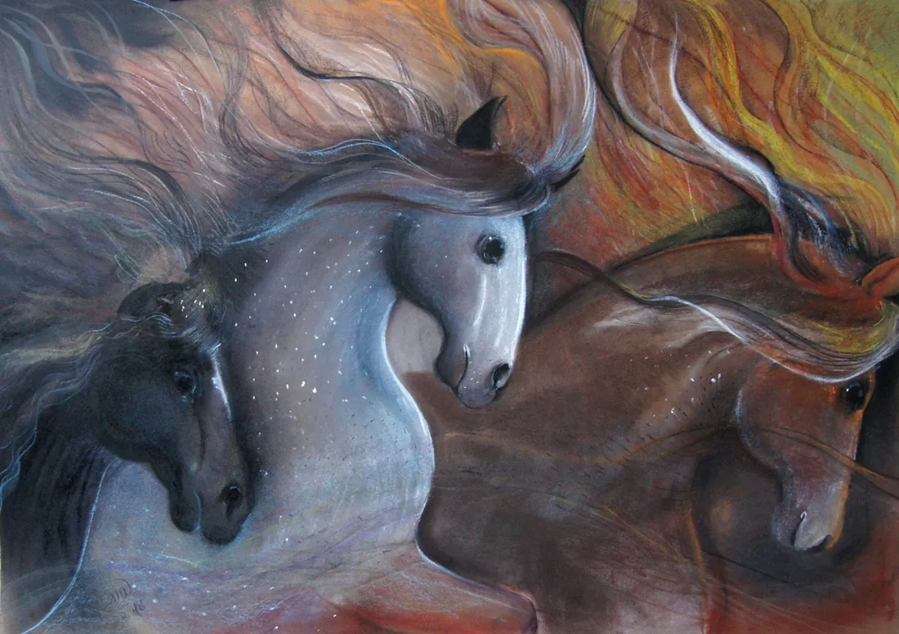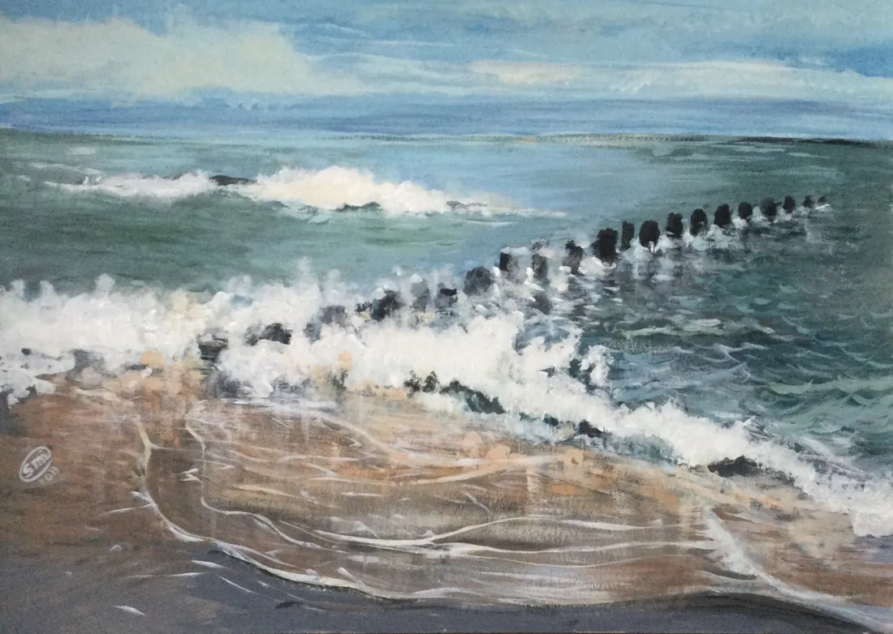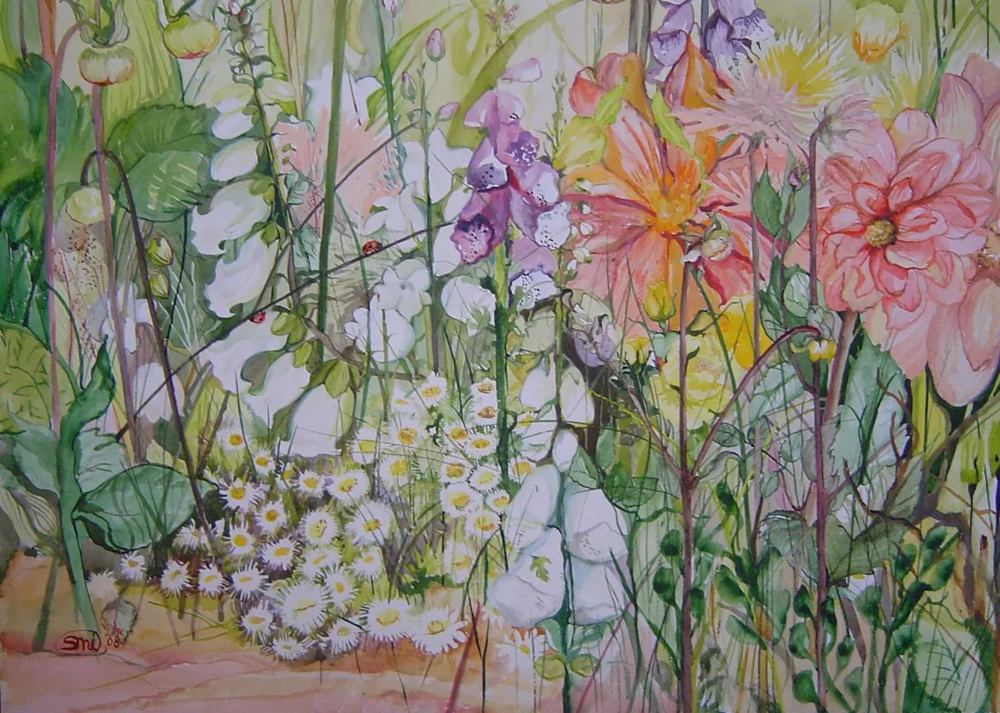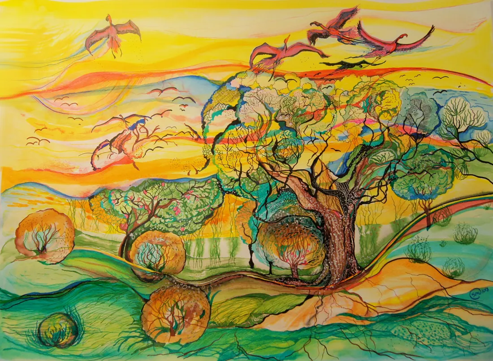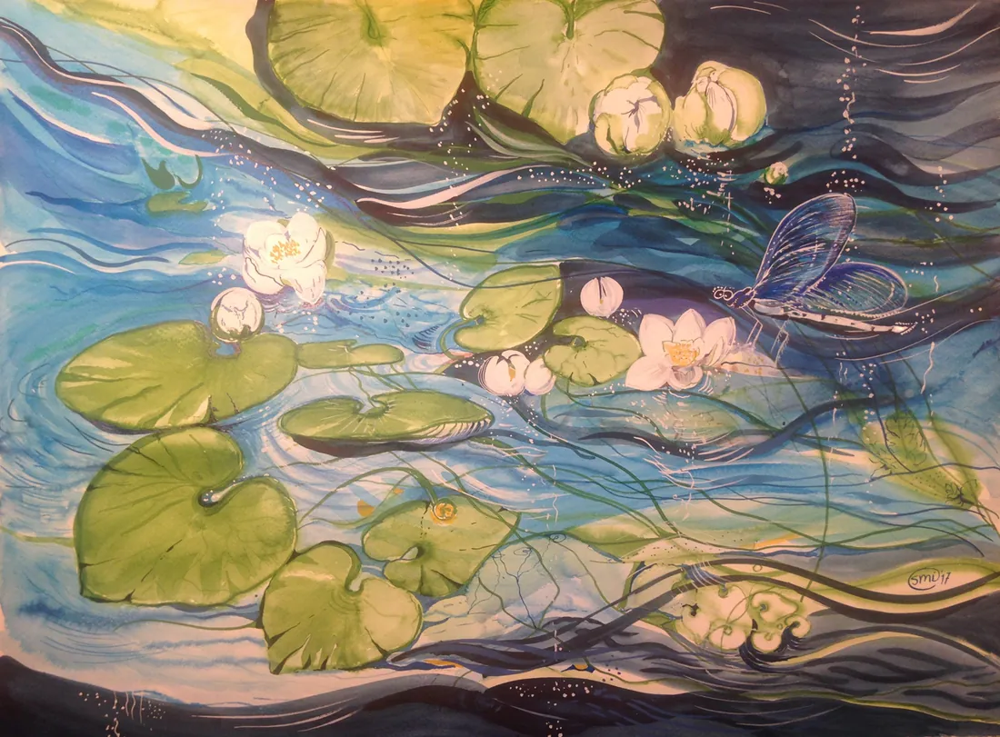</div>
</div>
</section>

<section class="sek">
<div class="wrap om">
<div class="om-tx">
<div class="om-gl">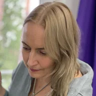<div><h2>O mnie</h2><span class="kr" aria-hidden="true"></span></div></div>
<p class="cyt">Poszukując piękna i dbając o dobre rzemiosło, w pracy łączę wiedzę praktyczną z wrażliwością artystyczną.</p>
<p>Malarka i artystka wizualna związana z Krakowem oraz Tokarnią w Beskidzie Makowskim. Absolwentka studiów podyplomowych na Wydziale Malarstwa ASP w Krakowie i Wydziale Architektury Wnętrz WSSiP w Łodzi.</p>
<a class="wiecej" href="o-mnie.html">Więcej o mnie</a>
</div>
<div class="dz">
<a class="k" href="malarstwo.html">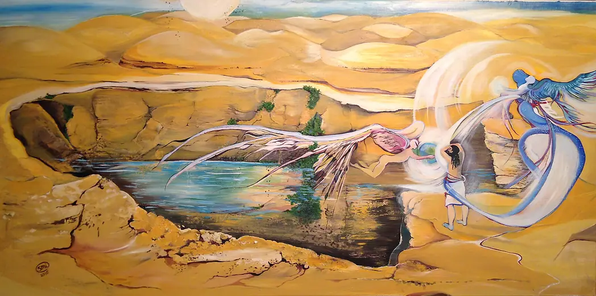<div class="t"><h3>Malarstwo</h3><p>Obrazy inspirowane naturą: rośliny, zwierzęta, morze i baśniowe postacie. Akryl, olej i akwarela, z informacją, które prace są dostępne.</p><span class="wiecej">Galeria obrazów i wydarzenia</span></div></a>
<a class="c" href="architektura-wnetrz.html"><div class="t"><h3>Architektura wnętrz</h3><p>Projekty wnętrz od koncepcji funkcjonalnej po nadzór autorski, z myślą o technice i budżecie inwestycji.</p><span class="wiecej">Zakres projektu i przykłady</span></div></a>
</div>
</div>
</section>

<section class="sek krem">
<div class="wrap"><h2>Najnowsze obrazy</h2><span class="kr" aria-hidden="true"></span></div>
<div class="pas-w" style="margin-top:clamp(28px,3vw,48px)">
<div class="pas" id="pas-mal" data-tor><figure class="ob" style="--r:0.4927"><button type="button" data-lb="mal" data-src="foto/k-szpaki-747.webp" data-mid="foto/k-szpaki-520.webp" data-cap="Szpaki, konwalie, paprocie - kadr: akryl na płótnie, 60 x 60 cm, 2026">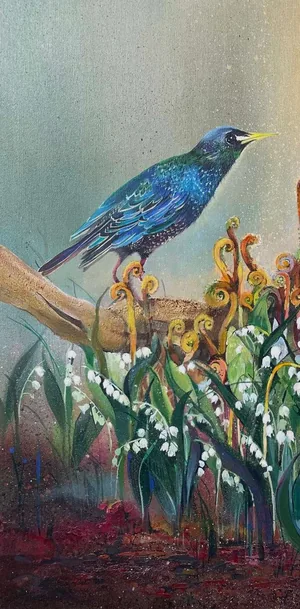</button><figcaption><b>Szpaki, konwalie, paprocie</b><span>kadr: akryl na płótnie, 60 x 60 cm, 2026</span> </figcaption></figure><figure class="ob" style="--r:0.5102"><button type="button" data-lb="mal" data-src="foto/k-trzmiele-1000.webp" data-mid="foto/k-trzmiele-520.webp" data-cap="Cztery pracowite trzmiele - kadr: olej na desce, 50 x 70 cm, 2021">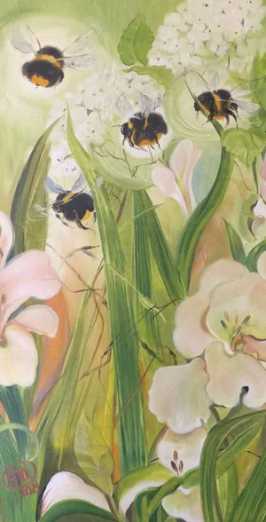</button><figcaption><b>Cztery pracowite trzmiele</b><span>kadr: olej na desce, 50 x 70 cm, 2021</span><br><em class=nie>niedostępny</em></figcaption></figure><figure class="ob" style="--r:0.5081"><button type="button" data-lb="mal" data-src="foto/k-meduzy-781.webp" data-mid="foto/k-meduzy-520.webp" data-cap="Spokój morza - meduzy i turkusy - kadr: akryl na płótnie, 80 x 90 cm, 2026">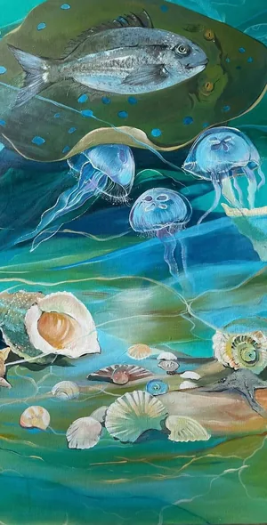</button><figcaption><b>Spokój morza - meduzy i turkusy</b><span>kadr: akryl na płótnie, 80 x 90 cm, 2026</span> </figcaption></figure><figure class="ob" style="--r:0.7400"><button type="button" data-lb="mal" data-src="foto/g-czapla-740.webp" data-mid="foto/g-czapla-385.webp" data-cap="Czapla i lilie wodne - akryl na płótnie, 60 x 80 cm, 2023, dostępny">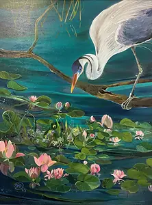</button><figcaption><b>Czapla i lilie wodne</b><span>akryl na płótnie, 60 x 80 cm, 2023</span><br><em>dostępny</em></figcaption></figure><figure class="ob" style="--r:0.8800"><button type="button" data-lb="mal" data-src="foto/g-droga-880.webp" data-mid="foto/g-droga-458.webp" data-cap="Droga na grecką plażę - olej na płótnie, 90 x 80 cm, 2019, dostępny"></button><figcaption><b>Droga na grecką plażę</b><span>olej na płótnie, 90 x 80 cm, 2019</span><br><em>dostępny</em></figcaption></figure><figure class="ob" style="--r:0.8120"><button type="button" data-lb="mal" data-src="foto/g-lew-812.webp" data-mid="foto/g-lew-422.webp" data-cap="Odpoczywający lew wenecki - płótno, 100 x 80 cm, 2015, cykl „Planeta Smi”">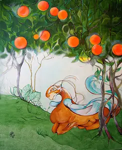</button><figcaption><b>Odpoczywający lew wenecki</b><span>płótno, 100 x 80 cm, 2015, cykl „Planeta Smi”<br><em class="nie">niedostępny</em></figure><figure class="ob" style="--r:1.1650"><button type="button" data-lb="mal" data-src="foto/g-wiewiorka-1165.webp" data-mid="foto/g-wiewiorka-606.webp" data-cap="Zimowa wiewiórka - akryl na płótnie, 70 x 60 cm, 2020, dostępny"></button><figcaption><b>Zimowa wiewiórka</b><span>akryl na płótnie, 70 x 60 cm, 2020</span><br><em>dostępny</em></figcaption></figure><figure class="ob" style="--r:0.8370"><button type="button" data-lb="mal" data-src="foto/g-dalie-837.webp" data-mid="foto/g-dalie-435.webp" data-cap="Amarantowe dalie - akryl na płótnie, 60 x 70 cm, 2021, dostępny"></button><figcaption><b>Amarantowe dalie</b><span>akryl na płótnie, 60 x 70 cm, 2021</span><br><em>dostępny</em></figcaption></figure><figure class="ob" style="--r:1.2830"><button type="button" data-lb="mal" data-src="foto/g-bazanty-1283.webp" data-mid="foto/g-bazanty-667.webp" data-cap="Bażanty w ogrodzie - płótno, 80 x 90 cm, 2017, cykl „Natura”">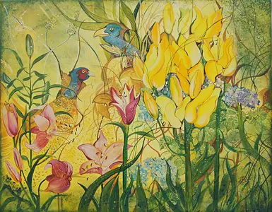</button><figcaption><b>Bażanty w ogrodzie</b><span>płótno, 80 x 90 cm, 2017, cykl „Natura”<br><em class="nie">niedostępny</em></figure><figure class="ob" style="--r:0.7960"><button type="button" data-lb="mal" data-src="foto/g-winniczki-796.webp" data-mid="foto/g-winniczki-414.webp" data-cap="Winniczki w deszczu - akryl na płótnie, 100 x 80 cm, 2021, dostępny"></button><figcaption><b>Winniczki w deszczu</b><span>akryl na płótnie, 100 x 80 cm, 2021</span><br><em>dostępny</em></figcaption></figure><figure class="ob" style="--r:0.7500"><button type="button" data-lb="mal" data-src="foto/g-niewinnosc-750.webp" data-mid="foto/g-niewinnosc-390.webp" data-cap="Niewinność - płótno, 100 x 80 cm, 2019, cykl „Planeta Smi”"></button><figcaption><b>Niewinność</b><span>płótno, 100 x 80 cm, 2019, cykl „Planeta Smi”<br><em class="nie">niedostępny</em></figure><figure class="ob" style="--r:0.7370"><button type="button" data-lb="mal" data-src="foto/g-lodz-737.webp" data-mid="foto/g-lodz-383.webp" data-cap="Czerwona łódź - akwarela, 56 x 42 cm, 2023, dostępny"></button><figcaption><b>Czerwona łódź</b><span>akwarela, 56 x 42 cm, 2023</span><br><em>dostępny</em></figcaption></figure><figure class="ob" style="--r:0.7790"><button type="button" data-lb="mal" data-src="foto/g-kosy-779.webp" data-mid="foto/g-kosy-405.webp" data-cap="Kosy i szpak - płótno, 100 x 80 cm, 2016, cykl „Natura”">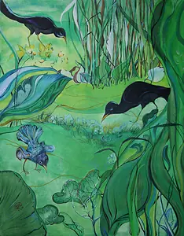</button><figcaption><b>Kosy i szpak</b><span>płótno, 100 x 80 cm, 2016, cykl „Natura”<br><em class="nie">niedostępny</em></figure><figure class="ob" style="--r:1.3330"><button type="button" data-lb="mal" data-src="foto/g-toscania-1333.webp" data-mid="foto/g-toscania-693.webp" data-cap="Wiejski pejzaż Toscanii - akryl na papierze płóciennym, 45 x 60 cm, 2022, dostępny"></button><figcaption><b>Wiejski pejzaż Toscanii</b><span>akryl na papierze płóciennym, 45 x 60 cm, 2022</span><br><em>dostępny</em></figcaption></figure><figure class="ob" style="--r:1.0090"><button type="button" data-lb="mal" data-src="foto/g-paprocie-1009.webp" data-mid="foto/g-paprocie-525.webp" data-cap="Nocne paprocie - płótno, 60 x 60 cm, 2017, cykl „Natura”"></button><figcaption><b>Nocne paprocie</b><span>płótno, 60 x 60 cm, 2017, cykl „Natura”<br><em class="nie">niedostępny</em></figure><figure class="ob" style="--r:0.7500"><button type="button" data-lb="mal" data-src="foto/g-piwonie-750.webp" data-mid="foto/g-piwonie-390.webp" data-cap="Piwonie - akryl na płótnie, 56 x 42 cm, 2022, dostępny">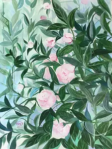</button><figcaption><b>Piwonie</b><span>akryl na płótnie, 56 x 42 cm, 2022</span><br><em>dostępny</em></figcaption></figure><figure class="ob" style="--r:1.1660"><button type="button" data-lb="mal" data-src="foto/g-smoki-1166.webp" data-mid="foto/g-smoki-606.webp" data-cap="Smoki ogniste - karton, 80 x 70 cm, 2012, cykl „Planeta Smi”"></button><figcaption><b>Smoki ogniste</b><span>karton, 80 x 70 cm, 2012, cykl „Planeta Smi”<br><em class="nie">niedostępny</em></figure><figure class="ob" style="--r:0.7500"><button type="button" data-lb="mal" data-src="foto/g-kamieniczki-750.webp" data-mid="foto/g-kamieniczki-390.webp" data-cap="Kamieniczki 6, Wenecja - akwarela i tusz, 34 x 46 cm, 2019, dostępny">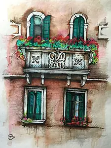</button><figcaption><b>Kamieniczki 6, Wenecja</b><span>akwarela i tusz, 34 x 46 cm, 2019</span><br><em>dostępny</em></figcaption></figure><figure class="ob" style="--r:2.0160"><button type="button" data-lb="mal" data-src="foto/g-pustynia-1400.webp" data-mid="foto/g-pustynia-1048.webp" data-cap="W każdym z nas jest pustynia - olej na płótnie, 60 x 120 cm, 2016, dostępny">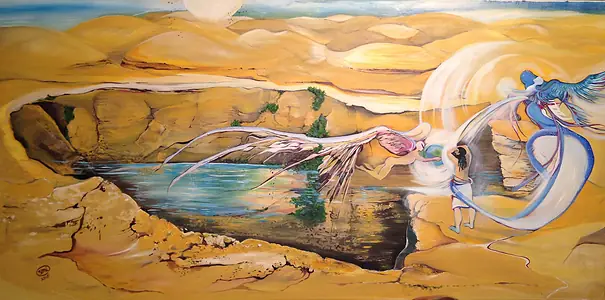</button><figcaption><b>W każdym z nas jest pustynia</b><span>olej na płótnie, 60 x 120 cm, 2016</span><br><em>dostępny</em></figcaption></figure></div>
<div class="pas-dol"><p class="soc" style="margin:0"><a href="malarstwo.html">Cała galeria</a></p><div class="nav" data-nav="pas-mal"><button type="button" data-k="-1" aria-label="Poprzednie obrazy"><svg viewBox="0 0 20 12" aria-hidden="true"><path d="M20 6H2M6 1 1 6l5 5" fill="none" stroke="currentColor" stroke-width="1.6"/></svg></button><button type="button" data-k="1" aria-label="Następne obrazy"><svg viewBox="0 0 20 12" aria-hidden="true"><path d="M0 6h18M14 1l5 5-5 5" fill="none" stroke="currentColor" stroke-width="1.6"/></svg></button></div></div>
</div>
</section>

</main>
<footer class="stopka">
<div class="wrap">
<a class="logo" href="index.html" aria-label="artmirowska, strona główna"><svg viewBox="0 0 382 61" role="img" aria-hidden="true" focusable="false"><use href="#znak" width="114" height="61"/><text x="128" y="47" font-family="Jost, Arial, sans-serif" font-weight="300" font-size="47" letter-spacing="-0.3"><tspan fill="#F39313">art</tspan><tspan fill="#00A0E3">mirowska</tspan></text></svg></a>
<nav aria-label="Stopka"><a href="o-mnie.html">O mnie</a><a href="malarstwo.html">Malarstwo</a><a href="architektura-wnetrz.html">Architektura wnętrz</a><a href="kontakt.html">Kontakt</a><a href="polityka-prywatnosci.html">Polityka prywatności</a></nav>
<div class="pr"><span>© <span id="rok">2026</span> Sylwia Mirowska</span><a class="wylinka-badge" href="https://wylinka.pl/?utm_source=artmirowska.pl&amp;utm_medium=stopka&amp;utm_campaign=wykonanie" rel="noopener" title="Strona wykonana przez Wylinka"><svg viewBox="0 0 64 64" aria-hidden="true" focusable="false" fill="currentColor"><path d="M9.8 22.8l-1.2-7.9 2.2-3.7 15.5 4.6-.5 1.5-7.2 5.5 4.7 15.6 5-15.6 7 0 4.1 12.7-4.2-.9-2.6 1.8-.8-2.2-5.3 15.6-4.3 0 .4 .2-2.1 2.8-1.3-1.1 1.1-1.4-3.1 .2-.1-1.7 2.2-.1-5.7-16.5-4.8 .6-.8 3.1 0 .5-.3 .5 .8 2.2-1.6 .5-.4-1.3-.8 1.6-1.5-.8 .8-1.6-1.4 .6-.6-1.6 2.3-.8 .2-.4 1.3-4.8 5.9-.8-2.4-6.9zM15.2 13.7l-.1-.4-.4 .8-.1 .8 .1 1 .1 .4 .3 .7 .3-.9 .1-.7 0-.8z"/><path class="wy-pod" d="M37.1 49.8l-4.5-13.3 2.6-1.8 4.2 .9 .9 2.8 3-9.7 0-.5 .1-.8 3.2-8.4 .5-1 .6-1 .9-1.1 1.3-1 1.1-.7 1.4-.5 1.4-.3 .7 0 .9 0 1.2 .3 1.4 .6 .8 .5 .7 .7 .6 .7 .5 .9 .3 .9 .1 .9 0 .8-.2 .9-.5 .9-.5 .6-.7 .5-.7 .3-.1-.1 0-.1 .5-.5 .3-.7 .2-.5 0-.6-.1-.6-.3-.7-.4-.5-.4-.4-.5-.3-.6-.3-.7 0-.7 .1-.6 .1-.5 .4-.5 .5-.3 .5-.2 .7-.1 1.5-1.4 5.1-.8 3.3-.3 .7-.5 .7-6 17.5 1.9 .1-.1 1.7-3.1-.2 1.1 1.4-1.3 1.1-2.1-2.8 .4-.2z"/><path class="wy-old" d="M40.8 50l.4-.2-4.1 0-4.2-12.5 2.5-1.7 4.3 .9 .6 1.9 .6-1.6 0-.3 2.4-7.8 0-.5 .1-.8 3.2-8.4 .4-.8 .6-.9 .9-1.2 .9-.9 1.3-.8 1.4-.6 1.2-.3 1.4-.1 1.3 .1 .6 .2 .8 .3 1.1 .6 .9 .7 .7 .9 .5 .9 .3 .9 .1 1.1-.1 .9-.3 .9-.4 .7-.6 .7-.6 .4-.6 .2-.1-.1 0-.1 .5-.5 .3-.7 .2-.5 0-.5-.1-.6-.2-.6-.3-.5-.4-.5-.5-.3-.6-.3-.7-.1-.6 0-.6 .1-.6 .3-.6 .5-.3 .4-.2 .5-.1 .5-.1 1.5-1.4 5.1-.8 3.3-.3 .7-.5 .7-6 17.5 1.9 .1-.1 1.7-3.1-.2 1.1 1.4-1.3 1.1zM49.6 17.1l.6 1.7-1.5 1.9 .4 .4 1.8-2.1-.7-2.1zM48.1 28.3l.5 1.8-1.7 1.8 .4 .4 1.9-2-.6-2.2zM37.9 41.7l1.7-1.5-.4-.4-1.7 1.4zM42.6 38.7l-1.5 2.8 1.1 2-1.3 2.6 .5 .2 1.5-2.8-1.1-2 1.4-2.5z"/></svg><span>wykonanie: <b>Wylinka</b></span></a></div>
</div>
</footer>
<div class="lb" id="lb" role="dialog" aria-modal="true" aria-label="Powiększenie">
<figure><figcaption></figcaption></figure>
<button class="x" type="button" aria-label="Zamknij"><svg viewBox="0 0 22 22" aria-hidden="true"><path d="M3 3l16 16M19 3 3 19" stroke="currentColor" stroke-width="1.8"/></svg></button>
<button class="p" type="button" aria-label="Poprzednie"><svg viewBox="0 0 22 22" aria-hidden="true"><path d="M14 3 6 11l8 8" fill="none" stroke="currentColor" stroke-width="1.8"/></svg></button>
<button class="n" type="button" aria-label="Następne"><svg viewBox="0 0 22 22" aria-hidden="true"><path d="M8 3l8 8-8 8" fill="none" stroke="currentColor" stroke-width="1.8"/></svg></button>
</div>
<script src="app.js?v=2511b" defer></script>
</body>
</html>
